Research Digital Showcase
A child-centered AR learning experience that helps primary learners understand plant growth, environmental responsibility, and ecological care through storytelling, interaction, and affective visualization.
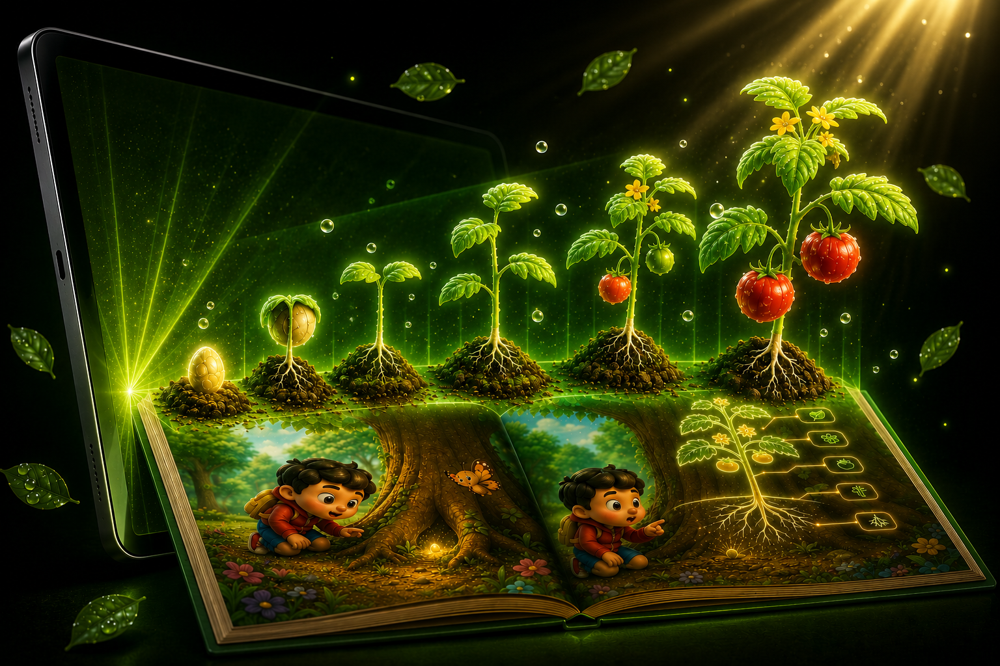
Project Identity
This project presents a handheld Augmented Reality interactive storybook designed to help children aged 6–8 understand plant growth and environmental concepts in an engaging and intuitive way. By combining physical storybook pages with digital AR content, the system creates an immersive learning experience that goes beyond traditional text-based learning.
To improve children’s understanding of plant growth through interactive AR storytelling, emotional visual cues, and real-world environmental simulation.
AR prototype, 3D plant assets, interaction flows, visual workflows, demonstration materials, and supporting research documentation.
Primary school children, teachers, parents, educational institutions, future researchers, and digital learning stakeholders.
The project uses a nature-inspired visual style with green tones, soft lighting, plant-based imagery, clean typography, and child-friendly visuals.
Team Contribution
Enables seamless interaction between the physical storybook and AR content through touch, gestures, and real-world anchoring.
Transforms plant health and environmental conditions into emotion-driven visual and audio cues to enhance understanding and empathy.
Drives a dynamic story-based learning experience where user actions influence plant growth and story outcomes.
Maps real-world environmental data such as light and movement into realistic plant behavior within the AR system.
Problem & Need
Children aged 6–8 often struggle to understand complex environmental concepts such as plant growth, health, photosynthesis, and ecological balance when they are taught through static text-based methods. These concepts are abstract and difficult to visualize, making it challenging for young learners to understand how plants grow, respond to their environment, and require care.
Understanding plant growth at an early age helps children develop awareness and appreciation for nature.
When concepts are not clearly understood, learning becomes less engaging and less effective.
Without meaningful experiences, children may struggle to form empathy toward nature and environmental care.
This gap can affect future attitudes and reduce environmentally responsible decision-making.
The project is designed to benefit several groups involved in children’s environmental learning.
Primary learners studying plant growth and environmental responsibility.
Educators who need interactive tools to explain abstract biological concepts.
Guardians who can support environmental learning at home.
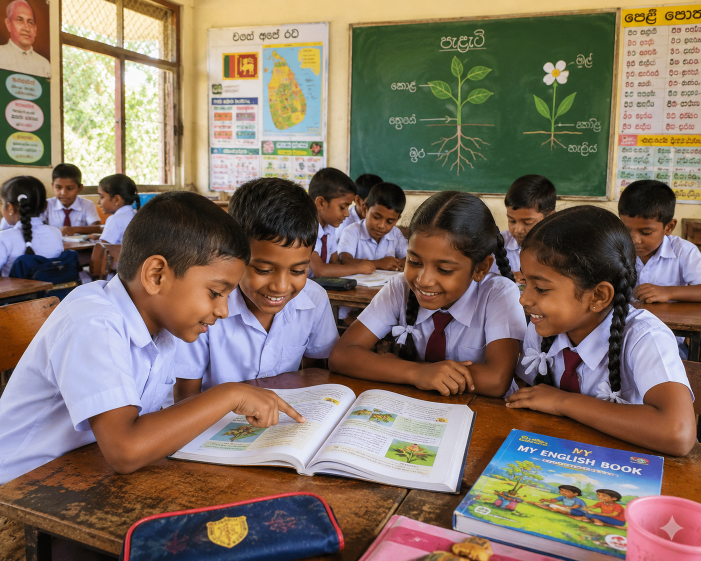
Educational institutions interested in interactive and future-ready learning methods.
Solution Overview
The proposed solution is a handheld Augmented Reality storybook that allows children to interact with plant growth concepts through storybook pages, AR visuals, user actions, and real-world environmental inputs. Instead of only reading about plants, children can see virtual plants grow, wilt, recover, and respond to their care.
The system combines storytelling, physical-digital interaction, emotional visualization, and sensor-based simulation to create a learning experience that is understandable, engaging, and meaningful for young learners.
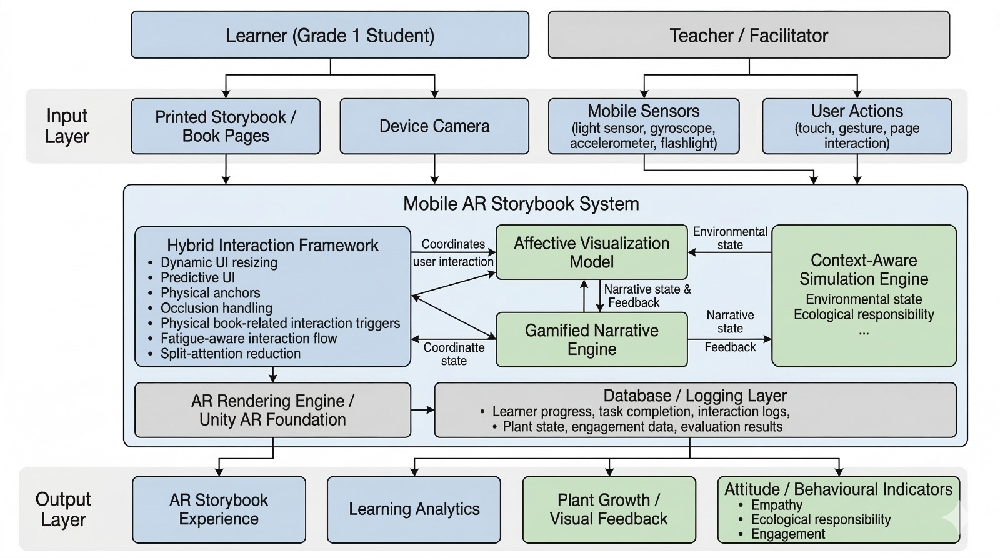
System Diagram
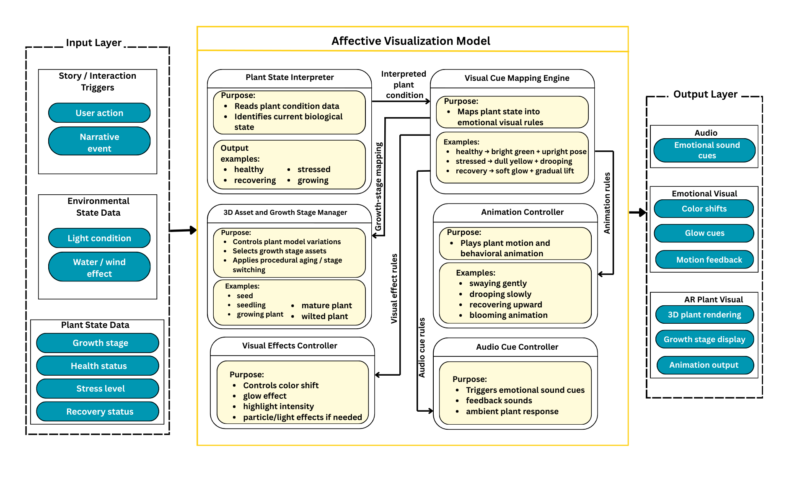
Affective Visualization Diagram
Connects the physical storybook with AR content using touch, gestures, and spatial anchoring.
Converts plant health, stress, and recovery into emotional visual and audio cues.
Creates story-based learning where user choices affect plant growth and outcomes.
Uses environmental data such as light and movement to influence virtual plant behavior.
My Component
My component focuses on designing an affective visualization model that translates biological plant conditions into emotion-responsive visual and audio cues. This helps children understand whether a plant is healthy, stressed, or recovering in a way that feels clear, emotional, and age-appropriate.
By using color changes, glow effects, movement, plant expressions, animations, and sound feedback, the model supports both learning and empathy. The goal is to help children emotionally connect with plants and understand the importance of care, sunlight, water, and environmental responsibility.
Bright colors, smooth movement, fresh leaves, gentle glow, and positive audio feedback.
Dull colors, drooping leaves, weak motion, slow animation, and sad or low audio cues.
Gradual color improvement, renewed movement, glow effects, and encouraging feedback.
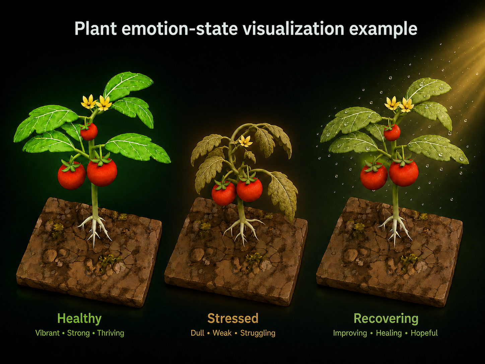
Plant emotion-state visualization example
Visual / Interactive Media Presentation
This section presents the project storyboard as a visual learning flow. The 12 storyboard frames show how the child interacts with the AR storybook, observes plant responses, and learns plant growth concepts through guided interaction.
Use the arrows or dots to explore the visual flow of the AR plant learning experience.
Prototype / Demonstration
The current prototype demonstrates the core AR learning concept and selected system components. It includes early plant visuals, interaction flows, AR placement concepts, and affective visualization states that represent plant health, stress, and recovery.
Research & Validation
The project is based on the need for more engaging environmental education methods for primary learners. AR is used to help children visualize abstract plant growth concepts in a more interactive and memorable way.
The project follows a design and prototype-based research approach involving literature review, system design, visual asset development, prototype implementation, and evaluation planning.
Planned testing focuses on child-centered interaction, visual interpretation, emotional engagement, usability, and understanding of plant conditions.
Observation, questionnaires, feedback collection, prototype testing, and comparison of user understanding before and after interaction may be used for validation.
The project expects to show that emotional visual cues and AR interaction can improve engagement, understanding, and empathy toward plant care and environmental responsibility.
The project is currently under development, with approximately 50% completed. The website presents the current progress, research direction, and future development plan.
Commercialization / Future Potential
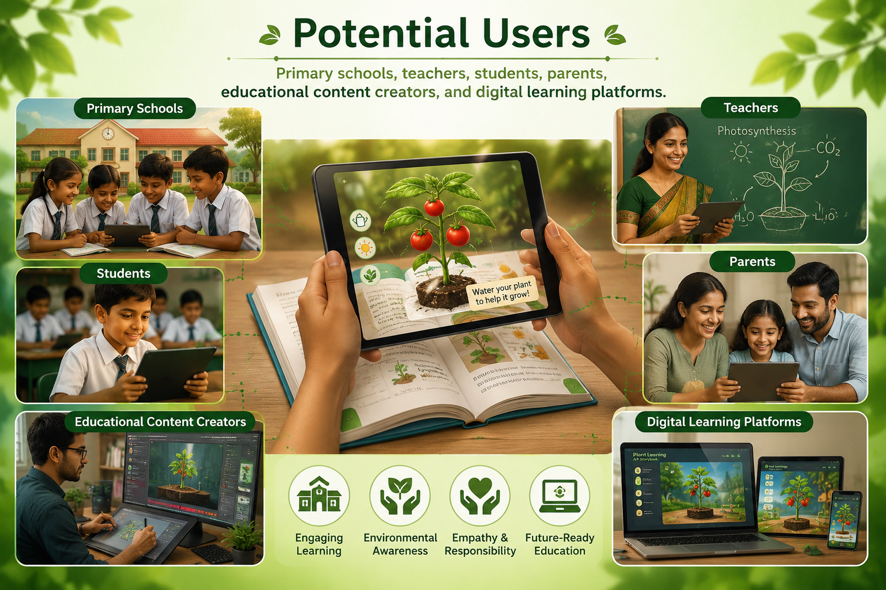
Primary schools, teachers, students, parents, educational content creators, and digital learning platforms.
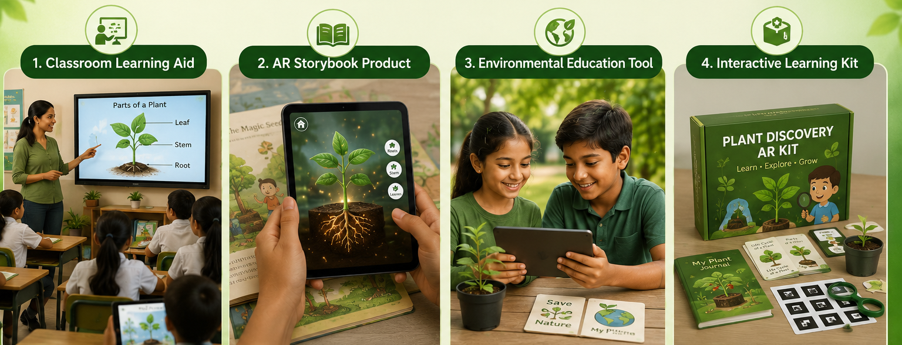
Can be used as a classroom learning aid, AR storybook product, environmental education tool, or interactive learning kit.
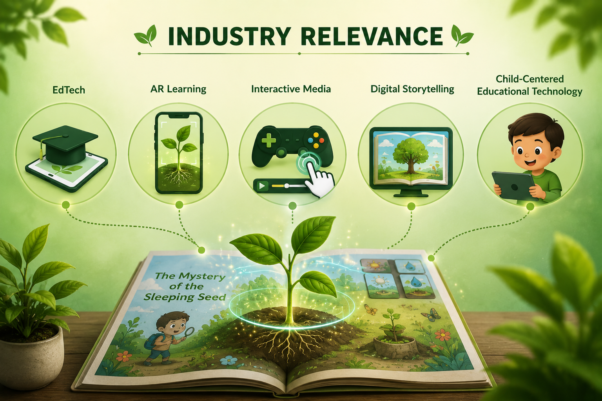
Relevant to EdTech, AR learning, interactive media, digital storytelling, and child-centered educational technology.
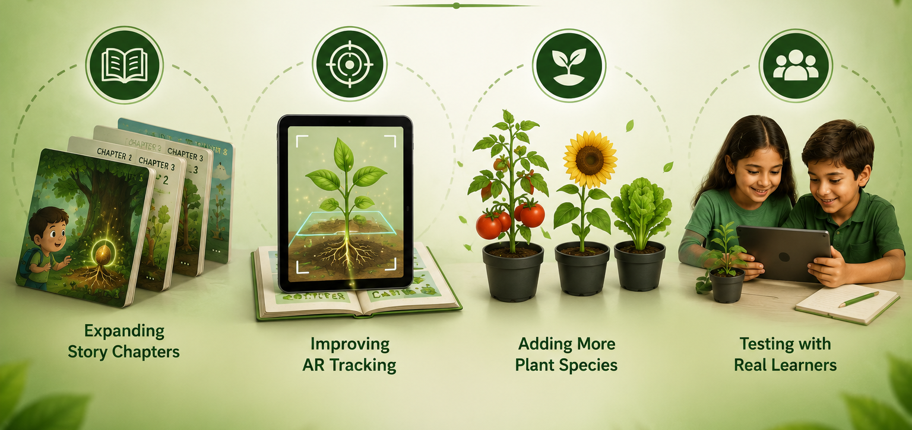
Future work includes expanding story chapters, improving AR tracking, adding more plant species, and testing with real learners.
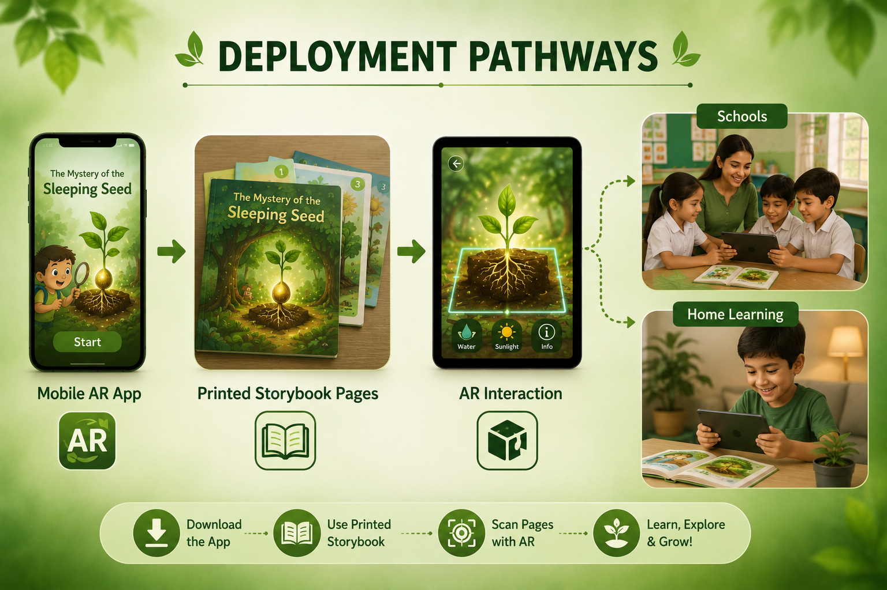
The project could be deployed as a mobile AR app with printed storybook pages for schools and home learning.
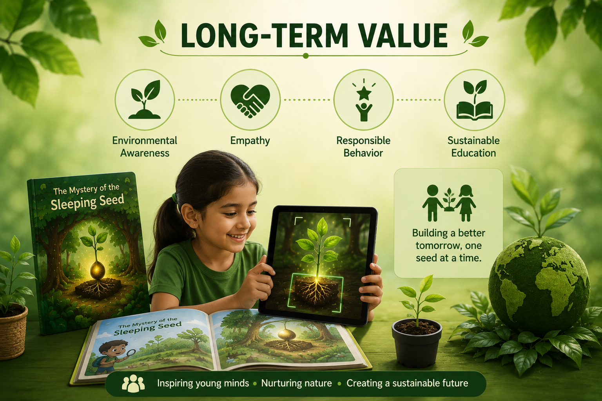
The system supports sustainable education by encouraging environmental awareness, empathy, and responsible behavior from an early age.
Download / Resource Repository
Selected project resources are provided below to support academic evaluation, future research, and project understanding.